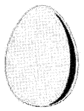
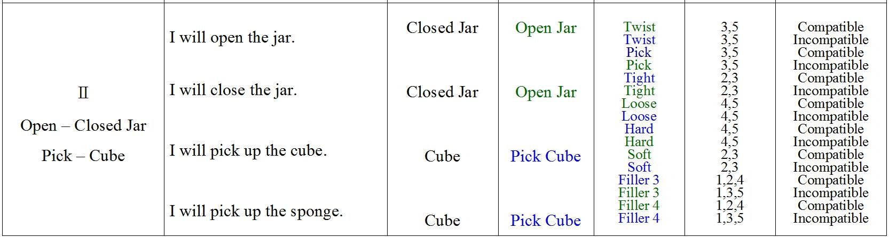
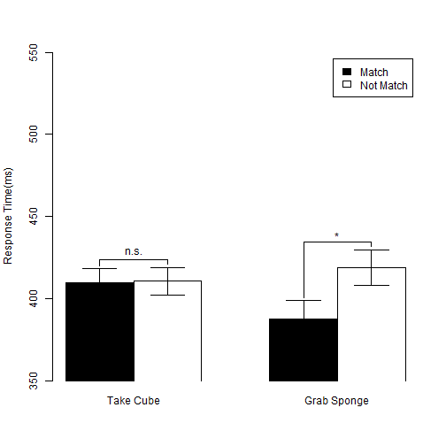
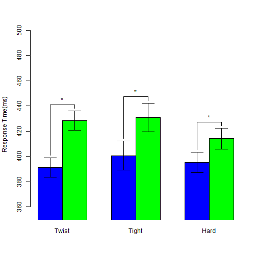
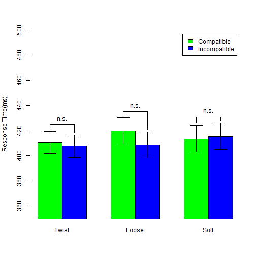

- Why study mental simulation
- How to measure mental simulation
- Experiment and findings
- Reproducibility Check source files
Embodied Simulation Effects
NCKU Replication
陳紹慶 胡中凡(共同主持人)
慈濟大學人類發展學系 成功大學心理學系
Outline
Why study mental simulation?
Language Comprehension: Two Perspectives
Colorless green ideas sleep furiously.


Embodied Cognition: How many perspectives?
| Shapiro(2010) | Rowlands(2010) | |
|---|---|---|
| Conceptulization | Embodied mind | |
| Replacement | Enacted mind | |
| Constitution | Extended mind, Embeded mind |

How to measure mental simulation?
Measurements
- Sentence-picture verification task
- Matching effect
- Word color discrimination
- Compatibility effect (Simon effect)
Sentence-picture verification: Example
I want to eat the egg in the dish.
Match the picture and bold word in next slide.
Sentence-picture verification: Example

Hardly choose YES?
Is it match?
- YES
- NO
Matching Effects
| Match | Mismatch | |
|---|---|---|
| RT | 697.00 | 761.00 |
| Correct Rate | 97.00 | 93.00 |
Zwaan, Stanfield, & Yaxley (2002)
- Supoort Perceptual Symbol System(Barsalou, 1999)
- Embodied Simulation Hypothesis: "Perceptual symbols are activated after reading sentence"
Matching Effects
- Positive matching effect (Match < Mismatch)
- shape (Zwaan, Stanfield, and Yaxley, 2002)
- orientation (Stanfield & Zwaan, 2001)
- Negative matching effect (Match > Mismatch)
- color (Connell, 2007)
- Replication problem
- Zwaan & Pecher(2012)
- color > shape > orientation
- Thinking
- Sentence-picture verification is a potential tool to inspect language comprehension rather than to inspect embodied cognition
- "... I see embodiment as a means and not as an end." (retrieved from Rolf Zwaan's blog, 2013/1/15)
Could we investigate the implicit processing of mental simulation?
There is no standard paradigm to measure the implicit mental simulation.
Extrinsic Affective Simon Task (EAST; De Houwer, 2003)
- Word meaning classification -> Establish meaning-response compatibility
- Key 1 = Happy Key 2 = Disgust
- Word color discrimination -> Measure compatibity effect
- Key 1 = Color1 Key 2 = Color2
- Word 1 = Happy Word 2 = Disgust
- Compatible Case
- Key 1 ~ Happy Key 2 ~ Disgust
- Incompatible Case
- Key 1 ~ Disgust Key 2 ~ Happy
Original EAST Results
| Word meaning: Happy | Word meaning: Disgust | |
|---|---|---|
| Compatible Response | 660.00 | 636.00 |
| Incompatible Response | 707.00 | 678.00 |
De Houwer(2003), Experiment 1
Modified EAST Design
- Word meaning classification
- ＞＞＞ Sentence-picture Verification
- Build situation in imagination
- Word color discrimination
- Critical words associated actions and feelings
- Actions and feelings matched the situation
- Two measurements
- Matching effect: Sentence-picture Verification
- Compatibility effect: Word color discrimination
Hypothesis
- Embodied Simulation Hypothesis
- People comprehend the linguistic forms of objects as the way people see the objects in the real world (Bergen, 2012).
- see -> move? observe?
- I will take this iron box.
- I will touch this iron box.
Situational Properties
- Actions
- Observe: have not to exhaust strength
- Move: have to exhaust strength
- Objects
- Observed objects generate the feeling about texture
- Moved objects generate the feeling about weight
- Feelings
- Texture
- Weight
Critical Measurements
- Matching effect
- Which constituents in the situation could be explicit to our imagination?
- Compatibility effect
- Which constituents in the situation have the advantage established the implicit association of two unrelated imagination?
Predictions
- Sentence-picture verification task: human mind would simulate the action on the target object and the feeling.
- Matching effect would happen to the pitcure that does not match the probe sentence.
- Word color discrimination task: human mind would process the implicit association of the action and the feeling.
- Compatibility effect would happen to the word represented action or feeling but the color instructed the incompatible response key.
Experiment and findings
Procedure

Sentence-Picture Verification: Stimuli Sentence

Sentence-Picture Verification: Stimuli Picture

Sentence-Picture Verification: Response keys

Word Color Discrimination: Twist-Tight Pick-Soft

Word Color Discrimination: Twist-Loose Pick-Hard

Word Color Discrimination: Response keys

Analysis protocal
- Sentence-picture verification
- Response key sets X Matching
- All trials in warm up blocks
- Word-color discrimination
- Three sets of target words: Blue critical, Green critical, Filler
- Critical words: Word types X Association types X Compatibility
- Filler words: Word types X Test Blocks X Compatibility
## Error in paste0(F1, F2, F3): object 'F1' not found
## Error in levels(x): object 'F2' not found
## Error in paste0(F1, F2, F3): object 'F1' not found
## Error in eval(expr, envir, enclos): object 'F1' not found
## Error in eval(expr, envir, enclos): object 'F1' not found
## Close Jar Pick Sponge Pick Cube Open Jar
## C 426.26 387.89 409.75 406.32
## I 454.32 418.79 410.60 444.03
Sentence-Picture Verification: Summary


Sentence-Picture Verification: ANOVA
| Df | Sum Sq | Mean Sq | F value | Pr(>F) | |
|---|---|---|---|---|---|
| Group | 1 | 685.75 | 685.75 | 0.06 | 0.8053 |
| Residuals | 38 | 422844.02 | 11127.47 | ||
| Matching | 1 | 23780.86 | 23780.86 | 21.38 | 0.0000 |
| Group:Matching | 1 | 1041.18 | 1041.18 | 0.94 | 0.3394 |
| Residuals | 38 | 42267.16 | 1112.29 | ||
| Action | 1 | 26980.66 | 26980.66 | 23.92 | 0.0000 |
| Group:Action | 1 | 4818.71 | 4818.71 | 4.27 | 0.0422 |
| Action:Matching | 1 | 2893.70 | 2893.70 | 2.57 | 0.1134 |
| Group:Action:Matching | 1 | 3941.22 | 3941.22 | 3.49 | 0.0654 |
| Residuals | 76 | 85728.09 | 1128.00 |
Word Color Discrimination: Critical Blue Words


Word Color Discrimination: Critical Blue Words
| Df | Sum Sq | Mean Sq | F value | Pr(>F) | |
|---|---|---|---|---|---|
| Series | 1 | 3142.13 | 3142.13 | 0.24 | 0.6281 |
| Residuals | 38 | 500636.31 | 13174.64 | ||
| Blocks | 2 | 1719.47 | 859.74 | 1.37 | 0.2613 |
| Series:Blocks | 2 | 2740.68 | 1370.34 | 2.18 | 0.1204 |
| Residuals | 76 | 47830.48 | 629.35 | ||
| Compatibility | 1 | 20370.47 | 20370.47 | 21.78 | 0.0000 |
| Series:Compatibility | 1 | 6344.47 | 6344.47 | 6.78 | 0.0131 |
| Residuals | 38 | 35535.19 | 935.14 | ||
| Blocks:Compatibility | 2 | 2905.38 | 1452.69 | 1.78 | 0.1762 |
| Series:Blocks:Compatibility | 2 | 1648.35 | 824.18 | 1.01 | 0.3698 |
| Residuals | 76 | 62141.54 | 817.65 |
Word Color Discrimination: Critical Blue Words
Twist-Tight
| Df | Sum Sq | Mean Sq | F value | Pr(>F) | |
|---|---|---|---|---|---|
| Residuals | 19 | 154355.93 | 8124.00 | ||
| Blocks | 2 | 2480.29 | 1240.15 | 2.33 | 0.1114 |
| Residuals1 | 38 | 20256.78 | 533.07 | ||
| Compatibility | 1 | 24725.84 | 24725.84 | 22.65 | 0.0001 |
| Residuals | 19 | 20740.84 | 1091.62 | ||
| Blocks:Compatibility | 2 | 1703.44 | 851.72 | 1.18 | 0.3190 |
| Residuals | 38 | 27482.06 | 723.21 |
Word Color Discrimination: Critical Green Words


Word Color Discrimination: Critical Green Words
| Df | Sum Sq | Mean Sq | F value | Pr(>F) | |
|---|---|---|---|---|---|
| Series | 1 | 363.65 | 363.65 | 0.03 | 0.8662 |
| Residuals | 38 | 480176.22 | 12636.22 | ||
| Blocks | 2 | 1994.90 | 997.45 | 0.96 | 0.3856 |
| Series:Blocks | 2 | 1099.13 | 549.56 | 0.53 | 0.5898 |
| Residuals | 76 | 78563.44 | 1033.73 | ||
| Compatibility | 1 | 6538.51 | 6538.51 | 5.68 | 0.0223 |
| Series:Compatibility | 1 | 2436.51 | 2436.51 | 2.12 | 0.1540 |
| Residuals | 38 | 43767.66 | 1151.78 | ||
| Blocks:Compatibility | 2 | 262.33 | 131.16 | 0.20 | 0.8171 |
| Series:Blocks:Compatibility | 2 | 1367.88 | 683.94 | 1.06 | 0.3530 |
| Residuals | 76 | 49233.38 | 647.81 |
Word Color Discrimination: Critical Green Words
Pick-Soft
| Df | Sum Sq | Mean Sq | F value | Pr(>F) | |
|---|---|---|---|---|---|
| Residuals | 19 | 205807.26 | 10831.96 | ||
| Blocks | 2 | 2377.97 | 1188.99 | 1.18 | 0.3173 |
| Residuals1 | 38 | 38179.13 | 1004.71 | ||
| Compatibility | 1 | 8478.89 | 8478.89 | 8.71 | 0.0082 |
| Residuals | 19 | 18500.72 | 973.72 | ||
| Blocks:Compatibility | 2 | 756.81 | 378.41 | 0.83 | 0.4420 |
| Residuals | 38 | 17237.34 | 453.61 |
Word Color Discrimination: Fillers
Blue

Green

Word Color Discrimination: Fillers
Blue
| Df | Sum Sq | Mean Sq | F value | Pr(>F) | |
|---|---|---|---|---|---|
| F1 | 1 | 882.99 | 882.99 | 0.13 | 0.7231 |
| Residuals | 38 | 263271.89 | 6928.21 | ||
| F4 | 1 | 2649.74 | 2649.74 | 2.12 | 0.1536 |
| F1:F4 | 1 | 177.36 | 177.36 | 0.14 | 0.7085 |
| Residuals1 | 38 | 47501.87 | 1250.05 | ||
| F3 | 1 | 15527.56 | 15527.56 | 10.59 | 0.0024 |
| F1:F3 | 1 | 748.84 | 748.84 | 0.51 | 0.4791 |
| Residuals2 | 38 | 55692.68 | 1465.60 | ||
| F4:F3 | 1 | 3.19 | 3.19 | 0.01 | 0.9386 |
| F1:F4:F3 | 1 | 113.94 | 113.94 | 0.21 | 0.6459 |
| Residuals3 | 38 | 20180.57 | 531.07 |
Summary
- Sentence-picture Verification
- Action exhausted strength: Positive for Tight; Negative for Loose
- Action exhausted nothing: Positive Matching Effects
- Word Color Discrimination
- Critical words connected to the action exhausted strenght: Positive compatibility effect but limited to Close - Tight
- Critical words connected to the action exhausted nothing: Null compatibility effects but tend to negative
- Filler words: Repetition failed to cause compatibility effects
Implications
- Two aspects of embodied simulation effect
- Explicit: Human minds process the surface of imagination/mental simulation.
- Implicit: Human minds process the ingrideints under imagination/mental simulation.
Welcome your critical comments.
A Practical Reproducible Research
Replication versus Reproduction
Academic society hardly define the standards for replication.
Sharing codes is the universal standard for reproduction.
Workflow of Psychological Research
Suggest Hypothesis -> Design -> Collect Data -> Analyze Data -> Report
Workflow of Psychological Research
Replication
Suggest Hypothesis -> Design -> Collect Data -> Analyze Data -> Report
- Participants
- Instruments
- Experimental Codes
- Analytical Codes
Workflow of Psychological Research
Reproduction
Suggest Hypothesis -> Design -> Collect Data -> Analyze Data -> Report -> Post Review
- Analytical Codes
- Cleaned data (Readable format, Codebook)
- Programming codes (R, SAS, SPSS, Matlab, ...)
You are watching a reproducible research case
- Share raw and cleaned data <- unavailable at this time
- Share stimulus <- review the previous slides
- Share analytical codes <- Check my github
#Tidy data of sentence-picture verification
AB_DATA <- read.table("../AB.csv",head=T,sep=",")
#Tidy data of word color discrimination
T_DATA <- read.table("../TEST.csv",head=T,sep=",")
# statistical figure
SP_RT1 <- barplot2(
SP_RT_M[,c(1,4)], beside=T,xpd=F,
ylim = c(350,550),ylab="Response Time(ms)",
col = c(rep(c("black","white"),2)), plot.ci = TRUE,
ci.l = (SP_RT_M[,c(1,4)] - SP_RTse_M[,c(1,4)]),
ci.u = (SP_RT_M[,c(1,4)] + SP_RTse_M[,c(1,4)]),
panel.first = TRUE )
Preview our repository

Reproducibile Psychological Research will be nice for
- Transparency
- Easy access
- Smooth workflow
- Quality and Integrity
- Peer evaluation
- Post-published review
- Making composition and analysis at a pipeline
- ( Focus on the hypothesis )
- Teaching and Training
- Enhance critical thinking
- Merge concepts and skills